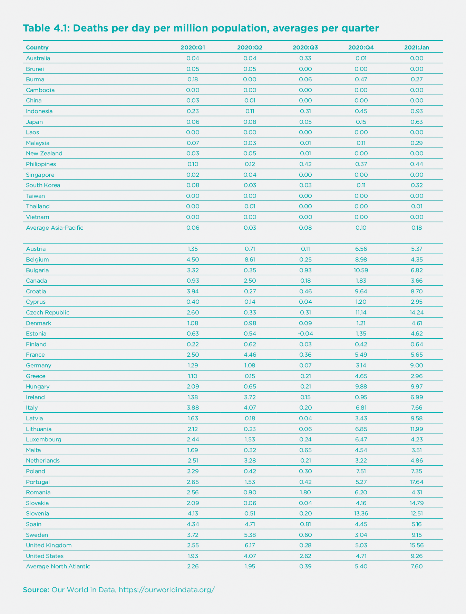
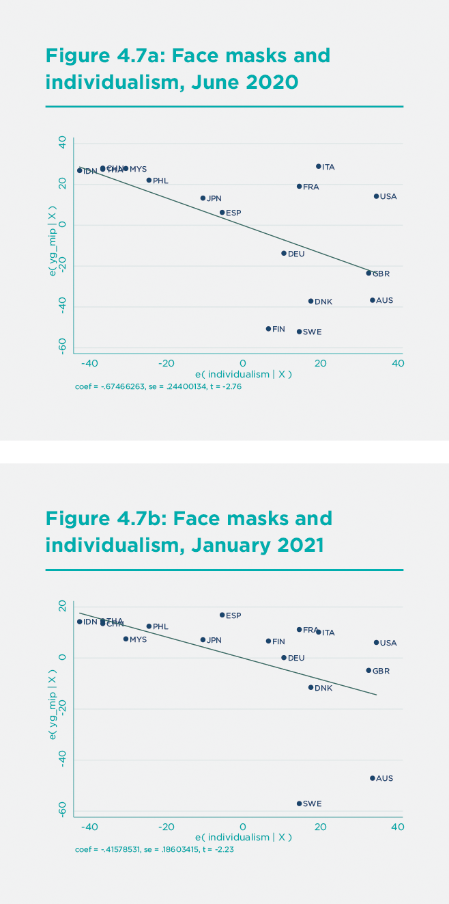
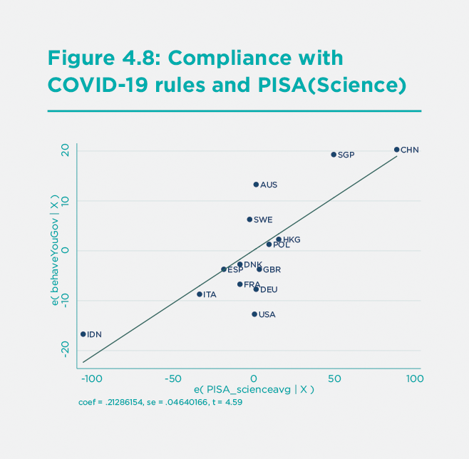

Reasons for Asia-Pacific Success in suppressing COVID-19
One of the keys to human well-being is the ability of societies to confront urgent societal challenges. Societal crises demand pro-sociality: the ability of societies to work harmoniously and rationally towards common objectives. In the case of COVID-19, the most dramatic global peacetime crisis since the Great Depression, pro-sociality is required at all scales of interactions. Individuals must abide by pro-social behaviors, such as physical distancing and wearing face masks. Governments must attend to human needs of the most vulnerable citizens. And nations must cooperate with each other in order to bring the global pandemic to a halt.
COVID-19 has exposed many acts of heroism, notably among front-line workers and healthcare workers who have battled the disease at great peril to their own safety, often without the benefit of even rudimentary personal protective equipment (PPE). Yet COVID-19 has also exposed the shortcomings and outright failures of pro-sociality in many countries, including many of the richest countries, for which lack of material resources is not an issue. This paper explores the differences in pro-sociality between the countries of the Asia-Pacific region, where the pandemic was effectively contained to low levels of community transmission, and the countries of the North Atlantic region, where community transmission and excess mortality have been extremely high throughout the course of the pandemic.
Perhaps the most notable variation across world regions of the COVID-19 pandemic has been the far lower mortality rate (deaths per million) in the Asia-Pacific region (northeast Asia, southeast Asia, and Oceania) compared with the North Atlantic region (the US, Canada, the UK, and the European Union).[1] Both regions are home to temperate-zone, urbanized, and developed economies and are broadly comparable in economic structure. Yet, the death rates were vastly lower in the Asia-Pacific than the North Atlantic in every quarter of 2020 and in January 2021, the most recent month at the time of completing this paper (Table 1). In January 2021, for example, the countries of the North Atlantic region had an unweighted average of 7.6 deaths per day per million population, while in the Asia-Pacific region, the unweighted average was a mere 0.18 deaths per day per million population, 42X lower than the North Atlantic.
The Asia-Pacific success in suppressing the pandemic has been consistent since last spring. On April 8, 2020, I wrote the following:[2]
East Asian countries are outperforming the United States and Europe in controlling the COVID-19 pandemic, despite the fact that the outbreak began in China, to which the rest of East Asia is very closely bound by trade and travel. The US and Europe should be learning as rapidly as possible about the East Asian approaches, which could still save vast numbers of lives in the West and the rest of the world.
The main sources of the successes of East Asia, and more broadly the Asia-Pacific, were also discernible at an early stage. The Asia-Pacific countries, in contrast with the North Atlantic, were actively engaged in a wide range of intensive Non-Pharmaceutical Interventions (NPIs), including tight border controls; quarantining of arriving passengers; high rates of face-mask use; physical distancing; and public health surveillance systems engaged in widespread testing, contact tracing, and quarantining (or home isolation) of infected individuals. I also document such differences across the two regions in a companion paper.[3]
The successes of the NPIs in the Asia-Pacific region reflected both the leadership of governments and the strong support of the public for the government’s bold leadership. The Asia-Pacific successes were both top-down, with governments setting strong control policies, and bottom-up, with the general public supporting governments and complying with government-directed public health measures.

One key factor in the success of the Asia-Pacific was the preparedness of the region for newly emerging zoonotic diseases, a point also emphasized by Helliwell et al. in this report. The Asia-Pacific region was on the front line of the battle against SARS in 2003 and also was mobilized in the H1N1 (2009) and MERS (2012) crises. Southeast Asia is battle-hardened against dengue fever. The practical import of the earlier epidemics is a regional preparedness strategy, “Asia-Pacific Strategy for Emerging Diseases and Public Health Emergencies” (now in its third version, APSED III), coordinated by the Western Pacific Regional Office (WPRO) of the World Health Organization.
Yet something more than preparedness is at work. Cultural and educational differences are also apparently playing key roles. The countries of the North Atlantic region have now had a year to learn from the Asia-Pacific countries, but by and large, they have not done so. The North Atlantic countries have failed to implement comprehensive NPIs during the entirety of 2020 and early 2021. Even after the first wave of infections was brought down in the summer of 2020 following lockdowns during the spring, the North Atlantic countries failed to introduce rigorous control systems akin to those of the Asia-Pacific. This article explores the puzzle as to why the North Atlantic failure persisted throughout 2020 and now into 2021.
Structural features in COVID-19 mortality rates
Before delving into the policy and behavioral differences between the two regions, we should note that cross-country differences in COVID-19 mortality rates depend not only on policy and behavioral factors but also on structural factors in societies that shape the COVID-19 epidemiology. There are at least five key structural factors:
Age of the population: The age-specific mortality rate from COVID-19 is far higher among individuals aged 65+, so population-wide mortality is higher in countries with a higher proportion of elderly people.
Comorbidities of the population: COVID-19 mortality is associated with a number of comorbidities, including cardiovascular disease, obesity, chronic obstructive pulmonary disease, diabetes, and others, so countries with higher rates of these comorbidities would have higher mortality rates.
Health-system coverage: COVID-19 mortality is reduced by access to Intensive Care Units (ICUs) and the interventions they provide (respirators, therapeutics). Disparities in health-system infrastructure affect mortality rates.
Contact patterns: The transmission of the COVID-19 virus (SARS-CoV-2) depends on structural factors such as time spent indoors (where transmission is more likely) versus outdoors, and thus on temperature, seasonality, employment patterns, urbanization, and the like.
International travel: The frequency of new infections arriving from abroad depends on the magnitude of international arrivals. More connected regions are more vulnerable to new introductions of the virus from abroad.
Such structural factors help to explain the low-to-moderate mortality rates observed in Africa and South Asia. In Africa and South Asia, death rates are far lower than in the North Atlantic despite less healthcare coverage (e.g., fewer hospital beds per capita). In Africa and South Asia, however, populations are younger; comorbidities are less prevalent; more time is spent outdoors because of higher temperatures, more farm work, and lower rates of urbanization; and there are fewer international tourist arrivals than in the North Atlantic.
Yet, such structural factors do not explain the differences in mortality rates between the Asia-Pacific and the North Atlantic regions. Both regions share broad structural commonalities in climate, population age structure, healthcare access, prevalence of comorbidities, and the flows of international tourist arrivals. In a cross-country regression of total deaths per million as of January 2021, the Asia-Pacific region has far lower mortality rates after controlling such structural factors (see supplementary information).
Cross-country differences in COVID-19 mortality rates depend not only on policy and behavioral factors but also on structural factors in societies.
Higher Public Support for NPIs in the Asia-Pacific
We have useful comparative information on public attitudes towards NPIs from YouGov, the UK survey company. YouGov surveys cover 18 countries across the two regions, including nine in the Asia-Pacific and nine in the North Atlantic. According to almost all behavioral indicators, the public in the Asia-Pacific countries has regarded the pandemic with greater concern and with larger behavioral responses than in the North Atlantic region. Part of this improved public response is no doubt due to the clarity of policies in the Asia-Pacific based on the region’s readiness for emerging diseases. When public officials sent contradictory messages, such as violating government curfew policies, public confidence in government policies was seriously eroded.[4] Another part seems to be both cultural and cognitive, reflecting the public’s own higher readiness to adopt pro-social health-seeking behaviors based on social norms and better scientific understanding of the pandemic.
Consider, for example, the proportion of the population wearing face masks in public places, shown in Figure 1 for the period March 2020 to January 2021. The public in the Asia-Pacific countries, in red, adopted face mask-wearing earlier and then at consistently higher rates of use compared with Europe and North America.
This higher face mask use in the Asia-Pacific is consistent with the public’s fears of catching the infection (Figure 2). A far higher proportion of the public in the Asia-Pacific region is “very” or “somewhat” scared of contracting COVID-19, compared with the North Atlantic region. Remarkably, these differences in fears have persisted throughout the pandemic, even though, in fact, the North Atlantic region has incurred far higher rates of infection and mortality.
The publics of the Asia-Pacific have also endorsed tough public policy measures by the government. According to the YouGov survey data, the publics in the Asia-Pacific has consistently supported two core pillars of NPIs: quarantining all inbound airline passengers (Figure 3) and quarantining (or locking down) locations in regions hit by infection (Figure 4). Such strong measures are key to suppressing transmission, and public support is vital for implementation, but these measures do not garner majority backing in many countries in the North Atlantic region.
Another indicator of public support or opposition to NPIs is the frequency and intensity of public protests against COVID-19 lockdowns. The Al Jazeera news agency monitors large-scale protests against COVID-19 control measures (defined as those that lead to arrests), resulting in the global map of protests in January 2021 shown in Figure 5.[5]
The map records 11 major protests in the North Atlantic region but just one in the Asia-Pacific region in Wellington, New Zealand.
Another key determinant of NPI success in the Asia-Pacific is the public’s adherence to government protocols. While we do not have authoritative data on public compliance with NPIs, we do have an interesting data point from a YouGov survey covering the period December 7-20, 2020. In this survey, individuals were asked whether they and others in their country were following the government’s COVID-19 rules. In general, the survey respondents gave themselves quite high grades for compliance (between 77% and 94%) but reported much lower compliance rates by “most people” in their local neighborhood (Figure 6).
Interestingly, the five locations in the Asia-Pacific region (Australia, China, Hong Kong SAR, Indonesia, and Singapore) score an average of 67.4% for “most people” following COVID-19 rules, while the nine locations in the North Atlantic region (Denmark, France, Germany, Italy, Poland, Spain, Sweden, United Kingdom, and United States) score an average of 55.4%. Only Indonesia scores low in the Asia-Pacific region, at 43%, whereas none of the North Atlantic countries reaches a score of 70% of “most people” following the COVID-19 rules.
Culture and the failure of the North Atlantic region to learn from the Asia-Pacific
The North Atlantic region was perhaps too inexperienced with emerging pandemic diseases to react promptly and decisively to the COVID-19 pandemic when it first emerged in late 2019/early 2020. This was true even after the WHO declared COVID-19 a “public health emergency of international concern” on January 30, 2020. By the time the dramatic scale of the pandemic was widely understood in mid-March 2020, the transmission of the virus was far too high for the understaffed and limited systems for testing, tracing, and quarantining.
Therefore, most countries in the world adopted stringent lockdowns in the spring of 2020, which brought the incidence of new infections to relatively low levels by June (around ten new confirmed cases per million per day in the UK and European Union on average in June). Yet even then, with incidence drastically lower, the North Atlantic region did not dramatically scale up its testing, tracing, and quarantining activities. By last summer, precautionary behavior had dissipated, and Europeans and Americans vacationed, setting the stage for a second and even larger wave of the pandemic in the fall.
Amazingly, the mainstream media also failed to draw any lessons from the glaring gap in performance between the Asia-Pacific and the North Atlantic. The leading business daily in the United States is the Wall Street Journal. The Journal’s editorial board completely disregarded the evidence from the Asia-Pacific throughout 2020. In the course of dozens of editorials, the Wall Street Journal editorial board utterly overlooked the lower mortality rates in the Asia-Pacific and consistently failed to inquire how those low rates could be achieved in the US.
The real puzzle is why there was so little learning during 2020. The lockdowns should have been followed by a massive scale-up of NPIs in order to keep incidence low. Why did this did not happen?
Part of the problem, no doubt, was the incompetence of some key leaders, including former President of the United States Donald Trump. Trump incorrectly believed that the only choice facing the US was whether or not to close the economy. His biggest mistake (which probably cost him the election in November 2020) was to overlook the NPI option. The US Government’s top infectious disease scientist, Dr. Anthony Fauci, recently put the situation this way: “My influence with [Trump] diminished when he decided to essentially act like there was no outbreak and focus on re-election and opening the economy. That’s when he said, ‘It’s going to go away, it’s magical, don’t worry about it.’”[6]
The failure obviously goes well beyond Trump. It was common to the European Union as well. The blunders ran both from the top-down and the bottom-up, in a kind of folie a deux between politicians and the public. In many North Atlantic countries, there were public protests against even the most basic public health measures, such as wearing face masks, with agitators rejecting mask mandates in the name of “liberty.” Nobody explained to these would-be libertarians that the first dictum of classic libertarianism is that the right to liberty does not include the right to harm others. John Stuart Mill famously put it this way: “The only purpose for which power can be rightfully exercised over any member of a civilized community, against his will, is to prevent harm to others.” A government requirement to wear face masks would surely have passed Mill’s strict scrutiny.
The researchers Iveta Silova, Hikaru Komatsu, and Jeremy Rappleye have recently and cogently argued that that excessive individualism of the Western nations made these countries resistant to the kinds of pro-social policies needed to end human-induced climate change[7] and COVID-19[8].
In their statistical analysis, the authors feature a cross-country measure of individualism originating from the work of Hofstede et al.[9] The measure ranges from 0 (complete collectivism) to 100 (complete individualism). It includes scores for nine countries in the Asia-Pacific region and 18 in the North Atlantic region. The mean score for the Asia-Pacific countries is 38.3, compared with 64.9 for the North Atlantic. The difference is statistically significant at the 0.01 level. All of the Asia-Pacific countries score below 50 (that is, are more collectivist) except for Australia (90) and New Zealand (79). In contrast, all of the North Atlantic countries score above 50 (that is, are more individualist) except for Greece (35) and Portugal (27).
The higher individualism of the North Atlantic is correlated with lower public support for NPIs, such as face masks. The proportion of the face mask use (according to the YouGov survey data) is a negative function of Individualism for June 2020 (Fig 7a) and January 2021 (Figure 7b).

The lower public support for NPIs in the North Atlantic countries also helps to explain the poorer performance of contact tracing in these countries. Many individuals in Europe and the United States were simply unwilling to disclose personal information, even their contacts, to public health officials. A recent report in Nature summarized the situation as follows:[10]
For contact-tracing to work, people with COVID-19 must be prepared to answer questions about their whereabouts, and they must isolate themselves from others while unwell. In many places, that’s not happening.
A survey of attitudes to contact-tracing across 19 countries in August found that nearly three-quarters of respondents would be willing to provide contact information. But rates varied. In Vietnam, only 4% of participants said that they wouldn’t provide this information. In the United States and Germany, the proportion was 21%, and in France, it was 25%. Concerns around data privacy and tracking are partly to blame, says researcher Sarah Jones at Imperial College London, who co-led the survey. “Many health authorities and governments, especially in North America and Western Europe, may need to urgently improve public-health messaging to mitigate concerns about contact-tracing,” she says.
Similarly, the public in North Atlantic countries rejected phone applications to signal proximity to COVID-positive individuals, with such apps widely criticized as invasions of privacy. Though considerations of privacy are important, the failure of testing, tracing, and isolating in the North Atlantic countries has had devastating consequences on mortality rates, suggesting that claims of liberty have been carried too far.
Another research team tested the cultural concept of “tightness-looseness” of social norms as a related factor in public behavior. The measure of tightness-looseness “captures the strength of norms in a nation and the tolerance for people who violate norms.”[11] It is based on respondents’ attitudes to six statements, such as, “There are very clear expectations for how people should act in most situations,” and “In this country, if someone acts in an inappropriate way, others will strongly disapprove.” The authors show that countries with high levels of cultural tightness (strictness of social norms) have had far fewer cases and deaths per capita compared with countries with high levels of cultural looseness. The Asia-Pacific region rank far higher in cultural tightness than the North Atlantic countries (see supplementary material).
The indicators of individualism and cultural tightness are negatively correlated. For the 22 countries in our sample of Asia-Pacific and North Atlantic countries with scores on both individualism and cultural tightness, the correlation coefficient is -0.49, p = 0.02 (see supplementary material). Nonetheless, there are some discrepancies. Sweden, for example, is scored as high in cultural tightness as well as individualism.
The failure of effective control in many countries may result from the public’s lack of proper understanding of the scientific challenges, and as a consequence, low public compliance with or acceptance of COVID-19 NPIs.
Scientific knowledge and public behavior
Another possible source of poor performance in the North Atlantic is the public’s insufficient scientific understanding of the pandemic. The pandemic has been accompanied by an “infodemic” of fake news. Trump actually used his social media to propagate conspiracy theories, fake cures to COVID-19, and other misinformation in the US. As a recent article in Nature puts it, “a world leader amplified once-obscure conspiracy theories, with each tweet and retweet strengthening the ideas and emboldening their supporters.”[12] A recent study shows how social media are conducive to the spread of fake news because of the tendency of individuals to spread false information on social media without thinking carefully as to whether the information is true.[13]
The same study shows that the public’s susceptibility to fake news also depends on the quality of the public’s scientific knowledge, which in turn depends on the quality of public education in science and mathematics. The authors report: “In particular, science knowledge was negatively correlated with belief in false headlines and positively correlated with belief in true headlines, whereas science knowledge was negatively correlated with sharing false headlines [on social media] and uncorrelated with sharing of true headlines” (p. 774).
Therefore, we may gain some additional insight into the comparative performance of countries in controlling the pandemic by comparing the science skills of students across these countries. The Programme on International Student Assessment (PISA) of the Organization for Economic Cooperation and Development (OECD) offers us the needed data. The 2018 scores on science knowledge and skills show that several of the East Asian countries, including China, Singapore, Vietnam, Japan, Korea, and Taiwan, significantly outperform countries in the North Atlantic region, though a few of the ASEAN countries (Indonesia, Philippines, and Thailand) score low.
What is also notable is that the PISA science score is highly correlated with the YouGov score on public compliance with COVID-19 rules: countries with high science scores also have high compliance scores. This intriguing albeit limited evidence is shown in Figure 8, based on a regression of Compliance (YouGov) on PISA(Science). The two countries with highest (perceived) compliance with COVID-19 rules, China and Singapore, are also the two countries with the highest PISA science scores. Indonesia scores the lowest in the group on both assessed compliance with COVID-19 rules and PISA science scores. While such data are suggestive at best, they raise a pertinent concern: are the publics in all countries sufficiently knowledgeable about assessing the basic epidemiology of COVID-19 and, therefore, the appropriate control measures? The failure of effective control in many countries may result from the public’s lack of proper understanding of the scientific challenges, and as a consequence, low public compliance with or acceptance of COVID-19 NPIs.

Conclusions and follow up
One of the most striking facts of the COVID-19 pandemic is the very high mortality rates in the North Atlantic countries compared with the Asia-Pacific region. No doubt, the Asia-Pacific region was better prepared for a newly emerging zoonotic pandemic. No doubt, the region put in place a successful package of NPIs that eluded the nations of Europe and North America, and the public in the Asia-Pacific countries generally encouraged the strong measures taken by the governments.
What is less clear and more puzzling is why the North Atlantic countries persisted in their failures despite the strong and growing evidence of the successes of the Asia-Pacific region. The North Atlantic countries demonstrated a persistent inability or unwillingness to learn from the Asia-Pacific experience. Part of this reflected a persistent conceptual failure in the US and some of the European countries; specifically the belief that the pandemic could not be controlled through NPIs, short of locking down the economy. Since political leaders were loath to close the economy, they essentially gave up on the idea of controlling the pandemic.
Yet beyond this lay public attitudes. The public in the North Atlantic region was less supportive of NPIs, less compliant with public policies, and more resistant to stringent control measures. We surmise that this resistance reflects two considerations: an excessive individualism at play in the North Atlantic societies and a poor level of scientific awareness, which increases the public’s susceptibility to fake news and undermines their readiness to comply with necessary control measures.
While these conclusions are merely suggestive at this stage, they direct our attention to the need for four prongs of action. The first is much better technical advice provided to national governments. The second is better information and explanation by the government to the general public to build support for and compliance with more effective policies. This information should routinely include data on best practices from other parts of the world. The third is a public debate and recalibration of the appropriate boundaries of individual liberty in the face of urgent collective challenges such as COVID-19 and climate change. The fourth is the need to improve science and math education and the public’s ability to reject fake news and conspiracy theories.
None of this will be easy or quick. We will need years to recover from this devastating shock. Yet, our future happiness depends on our coming to grips with the societal weaknesses and failures that led us into our current difficulties.
Endnotes
In this paper, the Asia-Pacific region includes 17 locations: three for China (mainland, Hong Kong SAR, and Taiwan), plus Japan and Korea in northeast Asia; Australia and New Zealand in Oceania, and the 10 countries of ASEAN in East Asia. The North Atlantic includes 30 locations: the US, Canada, and the UK, plus the 27 members of the EU. ↩︎
Sachs, J. D. (8 April 2020). The East-West Divide in COVID-19 Control. Project Syndicate. [https://www.project-syndicate.org/commentary/west-must-learn-COVID19-control-from-east-asia-by-jeffrey-d-sachs-2020-04]{.ul} ↩︎
Sachs, J. D. “Comparing COVID-19 Control in the Asia-Pacific and North Atlantic Regions**,”** Asian Economic Papers, 2021 (forthcoming) ↩︎
See Fancourt, D., Steptoe, A. and Wright, L, “The Cummings effect: politics, trust, and behaviours during the COVID-19 pandemic,” Lancet, 396, August 15, 2020, correspondence ↩︎
Haddad, M. (2 Feb 2021). Mapping coronavirus anti-lockdown protests around the world. Al Jazeera. https://www.aljazeera.com/news/2021/2/2/mapping-coronavirus-anti-lockdown-protests-around-the-world ↩︎
Fletcher, M. (19 February 2021). Anthony Fauci exclusive interview: ‘When I publicly disagreed with Trump he let terrible things happen’. The Telegraph. https://www.telegraph.co.uk/politics/0/dr-anthony-fauci-had-publicly-disagree-trump-allowed-terrible/ ↩︎
Komatsu, H., Rappleye, J., & Silova, I. (June 2019). Culture and the Independent Self: Obstacles to environmental sustainability? Anthropocene, 26. doi:https://doi.org/10.1016/j.ancene.2019.100198 ↩︎
Silova, I., Komatsu, H., & Rappleye, J. (14 January 2021). COVID-19, Climate, and Culture: Facing the Crisis of (Neo)Liberal Individualism. https://www.norrag.org/COVID-19-climate-and-culture-facing-the-crisis-of-neoliberal-individualism-by-iveta-silova-hikaru-komatsu-and-jeremy-rappleye/ ↩︎
Hofstede, G., Hofstede, G. J., & Minkov, M. (2010). Cultures and Organizations: Software of the Mind, 3rd edition. New York: McGraw Hill. ↩︎
Lewis, D. (14 December 2020). Why many countries failed at COVID contact-tracing — but some got it right. Nature, 588, 384-387. https://www.nature.com/articles/d41586-020-03518-4#ref-CR9 ↩︎
Gelfand, M. J., et al., “The relationship between cultural tightness-looseness and COVID-19 cases and deaths: a global analysis,” Lancet, online, 29 January 2021. ↩︎
Tollefson, J. (11 February 2021). How Trump Turned Conspiracy-Theory Research Upside Down. Nature, 590, 192-193. ↩︎
Pennycook, G., et al., “Fighting COVID-19 Misinformation on Social Media: Experimental Evidence for a Scalable Accuracy-Nudge Intervention,” Psychological Science, 31(7), 770-780, 2020. ↩︎